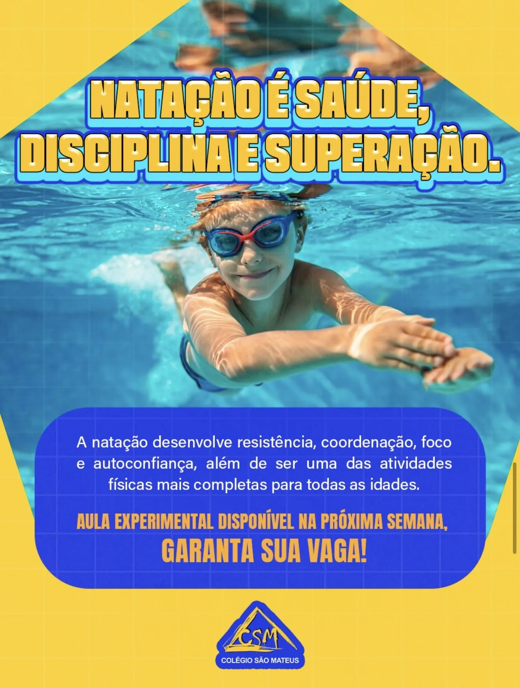
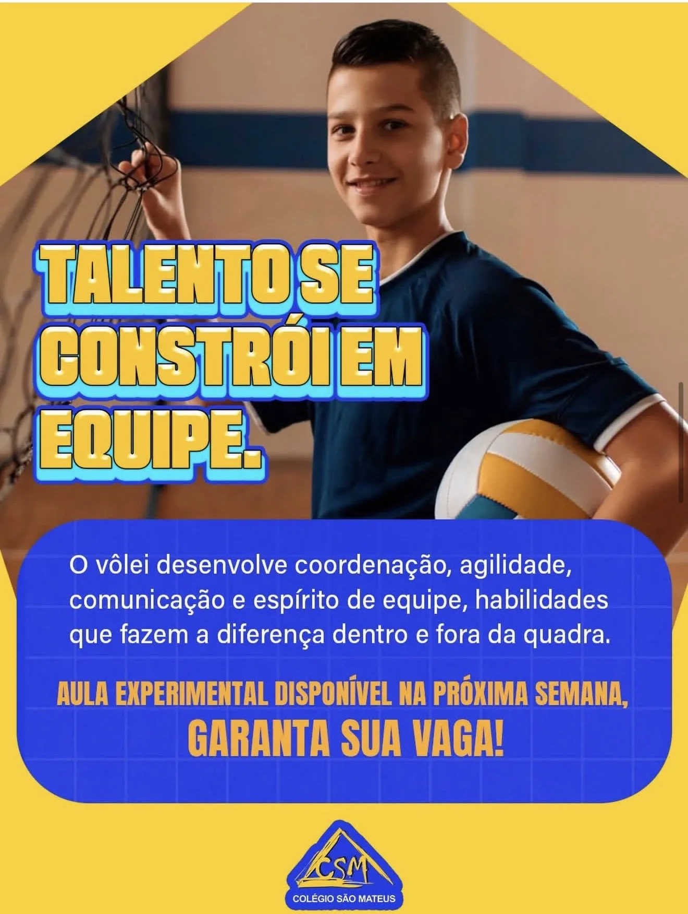

Colégio São Mateus
CSM · Desde 1980 · Cuiabá/MT
Do berçário ao Ensino Médio, formando gerações com tradição, metodologia ativa e muito cuidado.
46anos de história
4,7avaliação média
0 a 17berçário ao médio
7hàs 18h, seg a sex
Metodologia ativaO aluno é protagonista do aprendizado
Plano Educacional IndividualCada ritmo e potencial respeitados
Inclusão PCDEnsino especializado e suporte adequado
Aprovações na UFMTPré-ENEM e preparação para o vestibular
Atividades abertas para alunos e não alunos. Peça uma aula experimental.

NataçãoSaúde, disciplina e superaçãoAula experimental
Música e ViolãoCriatividade e expressãoAula experimental

VôleiEquipe, agilidade e focoAula experimental
KaratêCorpo e mente fortalecidosAula experimental
XadrezRaciocínio e estratégiaAula experimental
O CSM em movimento
PiscinaQuadra cobertaBiblioteca e sala de leituraRefeitórioÁrea verdeParquinhoBerçárioInternet e recursos digitaisPátio coberto
Quem confia
4,7
avaliação média de pais e alunos
Minha filha está no colégio desde 2014, entrou com 2 anos. Nunca passei por nenhum problema, só tenho elogios aos cuidados e carinho com ela.Mãe de aluna · aluna desde 2014
O CSM foi fundamental na aprovação da minha filha na UFMT. Os professores são dedicados e o ambiente é muito acolhedor.Pai de ex-aluna · aprovada na UFMT
Meu filho adora as atividades extracurriculares! O karatê mudou a postura dele, e a natação melhorou muito a saúde.Mãe de aluno · Ensino Fundamental
Av. Itália, 17 · Jardim Tropical
Cuiabá/MT · CEP 78065-158
Cuiabá/MT · CEP 78065-158
Segunda a sexta07h00 às 18h00
Sábado07h00 às 12h00
Quero um link da bio igual a esse
Feito pela Zebubit PERSONALIZADA
feita à mão pra você
Ou crie a sua no BioVenda GRÁTIS
Você mesmo monta em 2 minutos